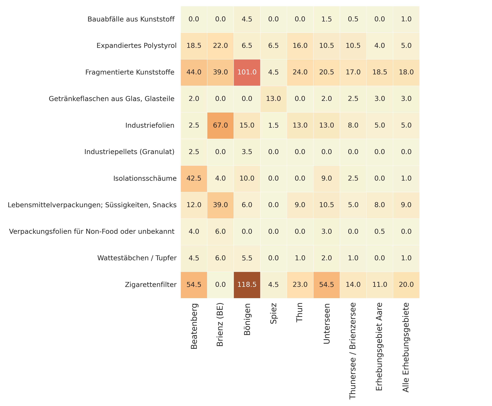
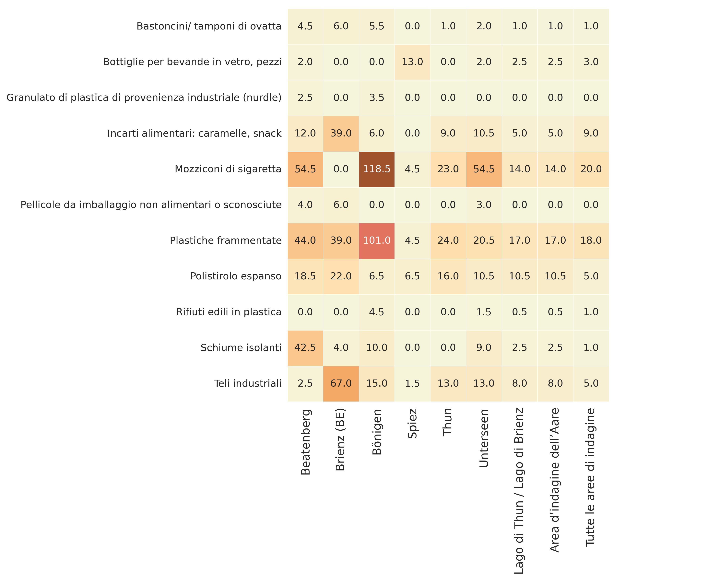
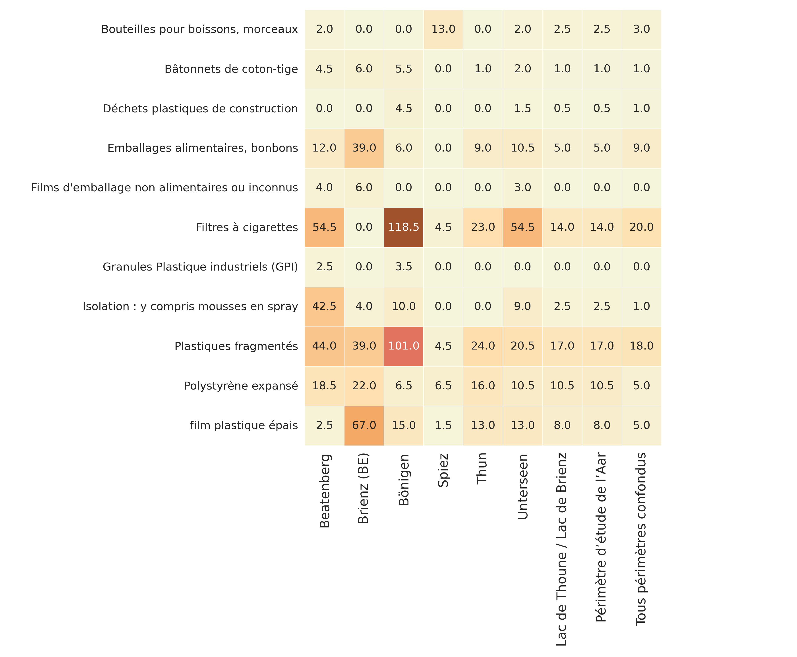
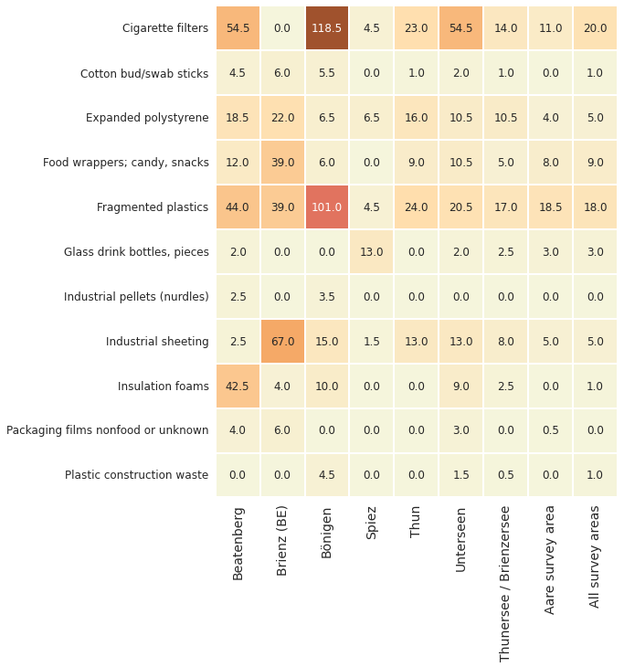

Vorwort
Contents
Vorwort¶
| Italiano | Francais | English |
Ziel des vorliegenden Projekts «Identification, quantification and analysis of anthropogenic Swiss litter» (Identifizierung, Quantifizierung und Analyse von anthropogenem Abfall in der Schweiz, IQAASL) war es, Daten zu erheben und die erforderliche Infrastruktur aufzubauen, um die Zusammensetzung und die Häufigkeit von anthropogenem Material an ausgewählten Schweizer Fliessgewässern und Seen zu evaluieren. Zudem sollen die Ergebnisse in einem konsolidierten, webbasierten Bericht dargestellt werden.
Gegenwärtig werden mindestens drei Manuskripte vorbereitet, die Daten aus diesem Bericht verwenden oder Techniken daraus erforschen:
Detecting accumulation and leakage with Spearman’s Rho, Zusammenarbeit mit Louise Schreyers,Wageningen University and Research. Repository
The probability of finding an object, Zusammenarbeit mit Romain Tramoy, Laboratoire Eau, Environment et Systèmes Urbains Leesu, Bhavish Patel, Paul Scherrer Institut, Montserrat Filella, Departement F.-A. Forel, Universität Genf. Repository
Monitoring trash with the next generation of Solid waste engineers 2016–2021, Zusammenarbeit mit Bhavish Patel, Paul Scherrer Institut, Christian Ludwig, Paul Scherrer Institute/EPFL. Repository
Bewertungsmethode¶
2008 veröffentlichten das Umweltprogramm der Vereinten Nationen (UNEP) und die Zwischenstaatliche Ozeanografische Kommission (IOC) den ersten internationalen Leitfaden zur Überwachung von Strandabfällen [eall09]. Diese Methode wurde vom OSPAR-Ausschuss im Jahr 2010 übernommen [OSP17]. Im Jahr 2013 gab die EU dann Leitlinien für die Überwachung von Abfällen in den europäischen Meeren (Guidance on Monitoring of Marine Litter in European Seas) heraus [Han13]. Die Schweiz ist OSPAR-Mitglied. Im Rahmen des IQAASL-Projekts und früherer Probenahmen wurden über 1’400 Proben gesammelt und kategorisiert, wobei die in diesen Leitlinien beschriebenen Methoden - die ursprünglich für Abfallerhebungen an Meeresküsten entwickelt wurden - für Seen und Fliessgewässer angepasst wurden [Han13].
Bei einer Untersuchung von Strandabfällen wird das sichtbare anthropogene Material erhoben, das in einem abgegrenzten Gebiet identifiziert wird, das auf einer Seite von einem See, einem Fliessgewässer oder dem Meer begrenzt ist.
Die Standorte werden anhand ihrer GPS-Koordinaten definiert.
Für jedes Erhebungsgebiet werden Länge und Breite gemessen.
Sichtbare Schadstoffe im Erhebungsgebiet werden gesammelt, klassifiziert, gezählt und gewogen.
Alle Gegenstände werden anhand der Codes der Leitlinien klassifiziert.
Für Gegenstände von regionalem Interesse wurden zusätzliche Codes vorgesehen. So wurden etwa Codes definiert für Gegenstände wie Pheromon-Lockstoff-Behälter und Skistöcke, damit diese Objekte in gewissen Gebieten entsprechend erfasst werden können. Durch das Identifizieren und Quantifizieren von Gegenständen können Forschende und Stakeholder wahrscheinliche Quellen ermitteln und Strategien definieren, mit denen dafür gesorgt werden kann, dass bestimmte Gegenstände in der Umwelt weniger häufig vorkommen. Weitere Informationen: Codegruppen.
Bewertungsparameter¶
Der Medianwert (50. Perzentil) der Erhebungsergebnisse gibt die Anzahl Gegenstände pro 100 m (p/100 m) Küstenlinie resp. Uferlinie an. Diese Methode wird in den EU Marine Beach Litter Baselines [HG19] beschrieben und in diesem Bericht als Standard verwendet. Der in Meeresgebieten angewandte Standard von 100 Metern Küstenlinie eignet sich für die Küstengebiete des europäischen Kontinents. Die Urbanisierung und die Topografie stellen jedoch bei der Auswahl geeigneter Standorte für langjährige Abfallerhebungen an Küsten resp. Ufern besondere Herausforderungen dar.
Wären die Untersuchungen auf Uferlinien mit einer Länge von 100 Metern beschränkt worden, hätte dies die Anzahl der möglichen Standorte sowie die Verwendung bereits bestehender Daten drastisch eingeschränkt. Daher wird beim IQAASL-Projekt (Identification, Quantification and Analysis of Swiss Litter) die lokale Topografie mit einer mittleren Erhebungslänge von 45 m (Median) und einem Durchschnitt von 51 m widergespiegelt. Erhebungen von Abschnitten mit einer Länge von weniger als 10 m wurden in der Analyse der Erhebungsergebnisse nicht berücksichtigt. Die Ergebnisse der Erhebung werden in p/100 m umgerechnet, indem sie mit dem Faktor 100 multipliziert werden.
Datenerhebung¶
Jede Person kann jederzeit eine Strandabfallerhebung durchführen. Wird die Erhebung gemäss der Methode der Leitlinien [Han13] oder den Abfallobjekten am Strand vorgenommen, kann das Ergebnis direkt mit den Abbildungen in diesem Bericht verglichen werden.
Verwendung dieses Berichts¶
Bei der Interpretation der Ergebnisse ist es wichtig, den Unterschied zwischen dem Median [Wikb] und dem Durchschnitt [Wik21] zu verstehen. Mit Ausnahme der monatlichen Resultate werden die Erhebungsergebnisse als Median p/100 m für den betreffenden Standort angegeben.
In der folgenden Abbildung wird beispielsweise der Median der Erhebungsergebnisse für die am häufigsten vorgefundenen Gegenstände an Thuner- und Brienzersee dargestellt.
{kind=link}

Abbildung 1: Interpretation der Erhebungsergebnisse. Die aggregierten Ergebnisse aller Erhebungsgebiete und des Aare-Erhebungsgebietes befinden sich in den beiden Spalten ganz rechts, in der Spalte links daneben sind die aggregierten Ergebnisse von Thuner- und Brienzersee angegeben. Die ersten sechs Spalten beziehen sich auf die Gemeinden, in denen die Proben genommen wurden. Dieser Standard wird im gesamten Dokument beibehalten. Die Zahl entspricht dem mittleren Erhebungswert für den betreffenden Gegenstand. Wurde dieser Gegenstand nicht in mindestens der Hälfte der Erhebungen festgestellt, beträgt der Medianwert null. Der Medianwert stellt eine angemessene Schätzung der Anzahl Gegenstände dar, die bei einer Wiederholung der Abfallerhebung wahrscheinlich gefunden werden würde.
Die Ergebnisse zeigen, dass Bauabfälle aus Kunststoff in Bönigen (4,5 p/100 m) und Unterseen (1,5 p/100 m) im Vergleich zu den anderen Gemeinden, die einen Medianwert von null aufweisen, häufiger vorzufinden waren. Industriefolien und Zigaretten wurden jedoch in allen Gemeinden in mindestens der Hälfte der Erhebungen festgestellt.
Das bedeutet, dass die Wahrscheinlichkeit, Bauabfälle aus Kunststoff zu finden, in den Uferzonen in Bönigen und Unterseen grösser war als in den anderen Gemeinden. Demgegenüber war es praktisch überall gleich wahrscheinlich, auf Industriefolien zu stossen, wobei in Brienz der grösste Anteil davon gefunden werden dürfte (67 p/100 m).
Im Kapitel statistische Schlüsselindikatoren werden alle grundlegenden Statistiken, die sich aus den Erhebungsergebnissen ableiten lassen, genau definiert. Ausserdem wird angegeben, wie sie für die Identifikation von Akkumulationszonen und signifikanten Ereignissen verwendet werden können. Die Methoden zur Berechnung der verschiedenen Umweltvariablen werden im Kapitel Das Landnutzungsprofil erläutert. Im Teil Codegruppen werden die Codes und die Beschreibungen, die zur Identifizierung der Gegenstände dienen, sowie die wirtschaftlichen Gruppierungen im Detail vorgestellt. Im Kapitel Abfallobjekte am Strand wiederum wird dargelegt, wie Proben gesammelt werden, und welche Methoden zur Feststellung von Extremwerten und zur Berechnung von Basiswerten für eine Region angewandt werden.
Zu diesem Bericht beitragen¶
Da dieser Bericht versioniert ist, können ganz einfach Berichte oder Analysen eingereicht werden, mit denen der Inhalt korrigiert, verdeutlicht oder verbessert werden kann. Am einfachsten ist es, eine Pull-Anfrage an das End of Sampling Repository zu schicken. Eingaben werden in allen Amtssprachen der Schweiz akzeptiert.
Prefazione¶
Scopo del presente progetto IQAASL (Identification, quantification and analysis of anthropogenic Swiss litter) è quello di raccogliere dati e sviluppare l’infrastruttura necessaria per valutare accuratamente la composizione e la quantità del materiale antropogenico presente lungo fiumi e laghi selezionati della Svizzera. I risultati sono poi presentati in un rapporto basato sul web.
Esistono almeno tre pubblicazioni in corso di allestimento che utilizzano i dati o esplorano le tecniche presenti in questo rapporto:
Detecting accumulation and leakage with Spearman’s Rho (Rilevamento dell’accumulo e della perdita con il rho di Spearman), in collaborazione con Louise Schreyers, Wageningen University and Research. Progetto di pubblicazione
The probability of finding an object (La probabilità di trovare un oggetto), collaborazione con Romain Tramoy, Laboratoire Eau Environment et Systèmes Urbains LEESU, Bhavish Patel, istituto Paul Scherrer,, Montserrat Filella, Department F.-A. Forel, University of Geneva. Progetto di pubblicazione
Monitoring trash with the next generation of Solid waste engineers 2016-2021 (Monitoraggio dei rifiuti con la nuova generazione di ingegneri ambientali 2016-2021), collaborazione con Bhavish Patel, istituto Paul Scherrer, Christian Ludwig, istituto Paul Scherrer/Scuola Politecnica Federale di Losanna. Progetto di pubblicazione
Metodo di valutazione¶
Nel 2008, la prima guida internazionale per il monitoraggio dell’accumulo di rifiuti spiaggiati (c.d. «beach litter») [eall09] è stata pubblicata dal Programma delle Nazioni Unite per l’ambiente (UNEP) e dalla Commissione oceanografica intergovernativa (COI) dell’UNESCO. Questo metodo è stato in seguito ripreso dalla Commissione OSPAR nel 2010 [OSP17]. Nel 2013 l’UE ha pubblicato una Guida sul monitoraggio dei rifiuti marini nei mari europei (Guidance on Monitoring of Marine Litter in European Seas – la Guida) [Han13]. La Svizzera è membro della Convenzione OSPAR. Nell’ambito del progetto IQAASL e dei rilevamenti precedenti, oltre 1400 campioni sono stati raccolti e catalogati adattando i metodi descritti nella Guida – concepita appunto per la costa marittima – a un rilevamento condotto lungo laghi e fiumi.
Nell’ambito di un’indagine sui rifiuti spiaggiati viene censito il materiale antropogenico visibile individuato all’interno di un’area delimitata bagnata da un lago, un fiume o un mare.
Le posizioni sono definite mediante rispettivi punti GPS
Per ogni area d’indagine vengono misurate lunghezza e larghezza
Gli inquinanti visibili all’interno dell’area d’indagine vengono raccolti, classificati, contati e pesati
Tutti gli articoli sono classificati in base alle definizioni dei codici stabiliti nella Guida
Per identificare oggetti di rilevanza regionale sono stati aggiunti codici supplementari. Per esempio, sono stati creati codici per oggetti quali contenitori di esche a feromoni e bastoni da sci per rendere conto della presenza di questi oggetti ove individuati in determinate regioni. L’individuazione e la quantificazione degli oggetti permettono ai ricercatori e alle parti coinvolte di determinare le probabili fonti inquinanti e definire così strategie di riduzione mirate a oggetti specifici.
Per maggiori informazioni: Gruppi di codici - english.
Parametri di valutazione¶
Il valore mediano (50° percentile) dei risultati dell’indagine viene riportato come numero di oggetti per 100 metri lineari (p/100 m) di riva. Questo metodo è descritto nelle EU Marine Beach Litter Baselines (Linee guida sui rifiuti ritrovati sulle spiagge marine) [HG19] e costituisce lo standard adottato nel presente rapporto. Lo standard di 100 metri lineari di costa usato nell’ambiente marino è pertinente per le regioni costiere del continente europeo. Tuttavia, l’urbanizzazione e la topografia presentano sfide specifiche per quanto concerne la selezione di luoghi adatti a condurre indagini annuali sui rifiuti spiaggiati.
Una limitazione delle indagini a 100 metri lineari di riva, rispettivamente di costa, esposta avrebbe tuttavia ridotto drasticamente il numero di luoghi d’indagine disponibili e l’uso dei dati preesistenti. Il progetto IQAASL (Identificazione, quantificazione e analisi dei rifiuti antropogenici in Svizzera) rispecchia pertanto la topografia locale con una lunghezza mediana di indagine di 45 m e una media di 51 m. Le indagini con lunghezze inferiori a 10 m non sono state invece considerate nell’analisi di baseline. I risultati delle indagini vengono convertiti in p/100 m rapportando i dati su base 100.
Raccolta di dati¶
Un’indagine sul beach litter può essere condotta da chiunque in qualsiasi momento. Se l’indagine viene condotta secondo il metodo descritto nella guida [Han13] o nel Beach litter baselines il risultato può essere confrontato direttamente con i grafici di questo rapporto.
Utilizzo del rapporto¶
Quando si interpretano i risultati è importante capire la differenza tra mediana [Wikb] e media [Wik21]. Tranne che per i dati mensili, i risultati delle indagini sono espressi come la mediana del parametro p/100m per quanto concerne l’ubicazione in questione.
A titolo di esempio, si consideri il risultato mediano dell’indagine per gli oggetti più comuni reperiti sulle sponde del lago di Thun e del lago di Brienz.
{kind=link}

Figura 1: Interpretazione dei risultati dell’indagine. I risultati aggregati di tutte le aree d’indagine come pure dell’area di indagine dell’Aare sono riportati nelle ultime due colonne all’estrema destra, preceduti dai risultati aggregati del lago di Thun e del lago di Brienz. Le prime sei colonne sono i comuni da cui sono stati prelevati i campioni. Questo standard è mantenuto nell’intero documento. Il numero rappresenta il valore mediano dell’indagine per uno specifico oggetto. Se tale oggetto non viene trovato in almeno la metà delle indagini, il valore mediano risulterà pari a zero. Il valore mediano è una stima ragionevole del numero di oggetti che probabilmente verrebbero trovati se si ripetesse un’indagine sui rifiuti spiaggiati.
I risultati per i rifiuti edili in plastica mostrano che questa tipologia presentava una prevalenza maggiore a Bönigen (4,5 p/100 m) e Unterseen (1,5 p/100 m) rispetto agli altri comuni, dove il valore mediano è zero. Teli industriali e sigarette sono stati tuttavia censiti in tutti i comuni in almeno la metà delle indagini.
In termini pratici, sulle rive dei comuni di Bönigen e Unterseen sussistevano probabilità di reperire rifiuti edili in plastica maggiori che negli altri comuni. Tuttavia le possibilità di trovare teli industriali sono state all’incirca uguali ovunque, sebbene il picco massimo sia individuabile a Brienz (67 p/100 m).
Il capitolo degli Indicatori statistici - english fornisce una definizione precisa di ciascuna delle statistiche di base ricavabili dai risultati dell’indagine e sul modo in cui esse vengono usate per individuare zone di accumulo ed eventi significativi. I metodi impiegati per calcolare le diverse variabili ambientali sono illustrati nella sezione Il profilo dell’uso del suolo - english. I codici e le descrizioni utilizzati per individuare gli elementi e i diversi raggruppamenti economici sono trattati in dettaglio nel capitolo Gruppi di codici - english. Le modalità di raccolta dei campioni e i metodi per individuare i valori estremi e calcolare le baseline per una regione sono esposti nella sezione Beach litter baselines.
Contribuire al presente rapporto¶
l presente rapporto viene continuamente aggiornato e saluta con favore l’invio di articoli o analisi che ne rettificano, chiariscono o migliorano il contenuto. Il modo più semplice per contribuire è inviare una richiesta alla fine dell’archivio di campionamento. Vengono accettati i contributi redatti in tutte le lingue nazionali svizzere.
Avant-propos¶
L’objectif du présent projet IQAASL (Identification, quantification and analysis of anthropogenic Swiss litter) est de collecter des données et de développer l’infrastructure nécessaire pour évaluer la composition et la quantité de matériaux d’origine anthropique ayant échoué sur les rivages de certains lacs et cours d’eau suisses. Les résultats de cette étude se présentent sous la forme d’un e-rapport disponible en ligne.
Au moins trois ouvrages utilisant les données ou explorant les techniques développées dans l’élaboration du présent projet sont en cours d’élaboration :
Détection de l’accumulation et des fuites avec Spearman’s Rho, collaboration avec Louise Schreyers, Wageningen University and Research. Projet de publication
The probability of finding an object, collaboration avec Romain Tramoy, Laboratoire Eau Environment et Systèmes Urbains LEESU, Bhavish Patel, Paul Scherrer Institute, Montserrat Filella, Department F.-A. Forel, University of Geneva. Projet de publication
Monitoring trash with the next generation of Solid waste engineers 2016-2021, collaboration avec Bhavish Patel, Paul Scherrer Institute, Christian Ludwig, Paul Scherer Institute/EPFL. Projet de publication
Méthode d’évaluation¶
En 2008, le Programme des Nations Unies pour l’environnement (PNUE) et la Commission océanographique intergouvernementale (COI)[eall09] ont publié les premières lignes directrices relatives à la surveillance des déchets marins (Guidelines on Survey and Monitoring of Marine Litter). Cette méthode a ensuite été reprise en 2010 par la Commission OSPAR [OSP17]avant que l’UE ne publie à son tour un Guide sur la surveillance des déchets marins dans les mers européennes [Han13] en 2013. La Suisse est membre d’OSPAR. Dans le cadre du projet IQAASL et des prélèvements antérieurs, plus de 1400 échantillons ont été récoltés et répertoriés en adaptant les méthodes décrites dans ce guide – pensé pour les côtes maritimes – à une application aux lacs et cours d’eau.
Réaliser un inventaire de déchets sauvages consiste à comptabiliser les matériaux d’origine anthropique visibles qui ont été identifiés dans une zone de rive délimitée d’un lac, d’un cours d’eau ou d’un océan.
Les zones de relevé sont définies par leurs coordonnées GPS.
La longeur et la largeur de chaque zone de relevé sont mesurées.
Les déchets visibles dans la zone de relevé sont collectés, classés, comptés et pesés.
Tous les objets sont catégorisés en fonction des codes définis dans le guide susmentionné.
Afin d’identifier les objets d’intérêt régional, des codes supplémentaires ont été ajoutés, par exemple pour les conteneurs d’appâts à phéromones ou les bâtons de ski afin de tenir compte de leur occurrence dans certaines régions. Les procédures de catégorisation et de quantification permettent aux chercheurs ainsi qu’aux parties prenantes de déterminer l’origine probable des articles collectés et de définir des stratégies de réduction spécifiques.
Pour plus d’informations : Groupes de codes - english.
Périmetètre d’évaluation¶
La valeur médiane (50e percentile) des résultats est définie comme étant le nombre d’éléments (pieces) collectés par transect de 100 m (p/100m). Il s’agit de la méthode décrite dans le document EU Marine Beach Litter Baselines [HG19] et du standard adopté dans le présent rapport. La norme de 100 m de rivage utilisée dans le milieu marin convient pour les régions côtières du continent européen. Cependant, l’urbanisation et la topographie présentent des défis spécifiques lorsqu’il s’agit de sélectionner des sites permettant d’inventorier de manière fiable tout au long de l’année les déchets polluant les abords des lacs et des cours d’eau.
Limiter les inventaires à 100 m de rivage aurait considérablement restreint le nombre de zones de relevé disponibles ainsi que l’utilisation des données préexistantes. Les longueurs médiane et moyenne de respectivement 45 m et 51 m utilisées dans le projet IQAASL (Identification, quantification and analysis of anthropogenic Swiss litter) reflètent par conséquent la topographie locale. Les données relevées sur moins de 10 m n’ont pas été prises en compte dans l’analyse de base. Les résultats de des inventaires ont été convertis en p/100 m en divisant les valeurs obtenues en mètre linéaire et en les multipliant ensuite par 100.
Collecte des données¶
Un inventaire des déchets retrouvés sur les plages peut être dressé à tout moment par tout un chacun. Si la collecte de données est effectuée selon la méthode décrite dans le guide susmentionné [Han13] ou au chapitre Beach litter baselines - english le résultat peut être comparé directement aux graphiques présentés ici.
Utilisation du présent rapport¶
Lors de l’interprétation des résultats, il est important de distinguer valeur médiane [Wikb] et valeur moyenne [Wik21] À l’exception des résultats mensuels, les résultats indiqués correspondent à la valeur médiane p/100m pour le site considéré.
Examinons, à titre d’exemple, le résultat médian des inventaires des objets les plus fréquemment rencontrés sur les bords des lacs de Thoune et de Brienz.
{kind=link}

Figure 1: Interprétation des résultats de l’inventaire. Les résultats agrégés de toutes les zones de relevé et du périmètre d’étude de l’Aar figurent dans les deux colonnes à droite et sont précédés par les résultats agrégés des lacs de Thoune et de Brienz. Les six premières colonnes correspondent aux communes dans lesquelles des échantillons ont été prélevés. Ce modèle est appliqué à l’ensemble du document. Le chiffre indiqué représente la valeur médiane relative à chaque objet considéré. Si un objet n’a pas été identifié dans au moins 50 % des inventaires, la valeur médiane sera nulle. La valeur médiane constitue une estimation fiable de la quantité de déchets susceptible d’être trouvée si un inventaire était à nouveau réalisé.
Les résultats montrent ici que les déchets plastiques issus du secteur de la construction étaient plus fréquents à Bönigen (4,5p/100m) et à Unterseen (1,5p/100m) que dans les autres communes, pour lesquelles la valeur médiane est nulle. Les résultats concernant les films plastiques industriels et les filtres de cigarettes font apparaître que ces objets ont été identifiés sur tous les sites étudiés dans au moins 50 % des inventaires réalisés.
Concrètement, la probabilité de trouver des déchets plastiques issus du secteur de la construction était plus élevée sur les plages de Bönigen et d’Unterseen que dans les autres localités. En revanche, bien que plus répandus à Brienz (67p/100m), les films plastiques industriels présentaient un taux d’occurrence presque égal sur tous les sites étudiés.
Le chapitre dédié aux Indicateurs statistiques clés - english donne une définition précise des statistiques de base qui peuvent être élaborées à partir des résultats et explique de quelle manière elles peuvent être utilisées pour identifier les lieux de concentration et les événements significatifs. Les méthodes appliquées afin de calculer les différentes variables environnementales sont exposées dans le Profil d’utilisation des sols - english. Les descriptions et codes utilisés pour catégoriser les objets ainsi que les différents secteurs économiques sont traités en détail dans Groupes de codes - english. Le protocole de collecte des échantillons ainsi que les méthodes permettant de déterminer les valeurs extrêmes et les niveaux de référence pour une région donnée sont exposés dans les Beach litter baselines - english.
Les résultats de chaque municipalité sont inclus avec le lac ou la rivière à laquelle ils appartiennent. Un rapport plus détaillé peut être produit pour n’importe quelle municipalité dans ce document.
Contribuer à ce rapport¶
Ce rapport étant dynamique, il est très facile de soumettre des articles ou des analyses qui corrigent, clarifient ou améliorent son contenu. Ceci peut être effectué via une requête Pull au End of Sampling Repository. Les soumissions sont acceptées dans toutes les langues officielles suisses.
Foreword¶
The aim of the project IQAASL (Identification, quantification and analysis of anthropogenic Swiss litter) was to collect data and develop the necessary infrastructure to accurately assess the composition and abundance of anthropogenic material along selected Swiss rivers and lakes and present those findings in a consolidated web-based report.
There are at least three manuscripts being prepared that use data or explore techniques in this report:
Detecting accumulation and leakage with Spearman’s Rho, collaboration with Louise Schreyers, Wageningen University and Research. Repository
The probability of finding an object, collaboration with Romain Tramoy, Laboratoire Eau Environment et Systèmes Urbains LEESU, Bhavish Patel, Paul Scherrer Institute, Montserrat Filella, Department F.-A. Forel, University of Geneva. Manuscript available
Monitoring trash with the next generation of Solid waste engineers 2016-2021, collaboration with Bhavish Patel, Paul Scherer Institute, Christian Ludwig, Paul Scherrer Institute/EPFL. Repository
Assessment method¶
In 2008 the first international guide to monitoring beach-litter was published by the United Nations Environment Program (UNEP) and Intergovernmental Oceanographic Commission (IOC) [eall09]. This method was reproduced by the OSPAR Commission in 2010 [OSP17]. In 2013 the EU released Guidance on Monitoring of Marine Litter in European Seas (The guide) [Han13]. Switzerland is a member of OSPAR. Including IQAASL and all the previous projects, over 1,400 samples have been collected in Switzerland that have used the adapted version of the The guide [Han13].
A beach-litter survey is the accounting of visible anthropogenic material identified within a delimited area that is bordered on one side by a lake, river or ocean.
Locations are defined by their GPS points
Length and width are measured for each survey area
Visible pollutants within the survey area are collected, classified, counted and weighed
All items are classified based on code definitions included in The guide.
To identify objects of regional interest supplementary codes were added. For example, codes were developed for items such as pheromone bait containers and ski poles to account for the occurrence of these objects when identified in certain regions. Identifying and quantifying items allows researchers and stakeholders to determine probable sources and define reduction strategies targeting specific items.
For more information: Code groups.
Assessment metric¶
The median value (50th percentile) of the survey results is reported as the number of objects per 100m (p/100m) of shoreline. This is the method described in EU Marine Beach Litter Baselines [HG19] and is the standard used in this report. The 100-meter shoreline standard used in the marine environment is appropriate for coastal regions of the European continent. However, urbanization and topography present unique challenges when selecting locations suitable to safely conduct yearlong shoreline litter surveys.
Limiting surveys to 100 meters of exposed shoreline would have dramatically reduced the number of available survey locations as well as the use of preexisting data. Thus, the IQAASL reflects local topography with a median survey length of 45m, and an average of 51m. Surveys less than 10m were not considered in the baseline analysis. The survey results are converted to p/100m by multiplying the survey result by 100.
Collecting data¶
A beach litter survey can be conducted by anybody at anytime. If the survey is conducted according to the method described in The Guide [Han13] or Beach litter baselines the result can be compared directly to the charts in this report.
Using this report¶
It is important to understand the difference between the median [Wikb] and the average [Wik21] when interpreting the results. Except for monthly results the survey results are given as the median p/100m for the location in question.
As an example, consider the median survey result for the most common objects on Thunersee and Brienzersee.
{kind=link}

Figure 1: Interpreting the survey results. The aggregated results from all survey areas and the Aare survey area are on the two far-right columns, preceded by the aggregated results from Thunersee and Brienzersee. The first six columns are the municipalities from where the samples were taken. This standard is maintained throughout the document. The number represents the median survey value for that object. If that object is not found in at least half of the surveys then the median value will be zero. The median value is a reasonable estimate of the number of objects likely to be found if a litter survey were repeated.
The results for plastic construction waste indicate that it was more prevalent in Bönigen (4.5p/100m) and Unterseen (1.5p/100m) versus the other municipalities where the median value is zero. However Industrial sheeting and cigarettes were identified at all municipalities in at least 1/2 the surveys.
In practical terms there was a better chance of finding plastic construction waste on the beach in Bönigen and Unterseen than the other municipalities. However, the chances of finding industrial sheeting were approximately equal anywhere but the most might be found at Brienz (67p/100m)
The Key statistical indicators chapter gives a precise definition of each of the basic statistics that can be derived from the survey results and how they are used for identifying zones of accumulation and significant events. The methods used to calculate the different environmental variables are explained in The land use profile. The codes and descriptions used to identify the items as well as the different economic groupings are covered in detail in Code groups. How samples are collected and the methods for identifying extreme values and calculating baselines for a region can be found in Beach litter baselines.
Contributing to this report¶
This report is versioned therefore it is very easy to submit articles or analysis that correct, clarify or improve the content. The easiest way to contribute is to send a pull request to end of sampling repo. Submissions are accepted in all official Swiss national languages.